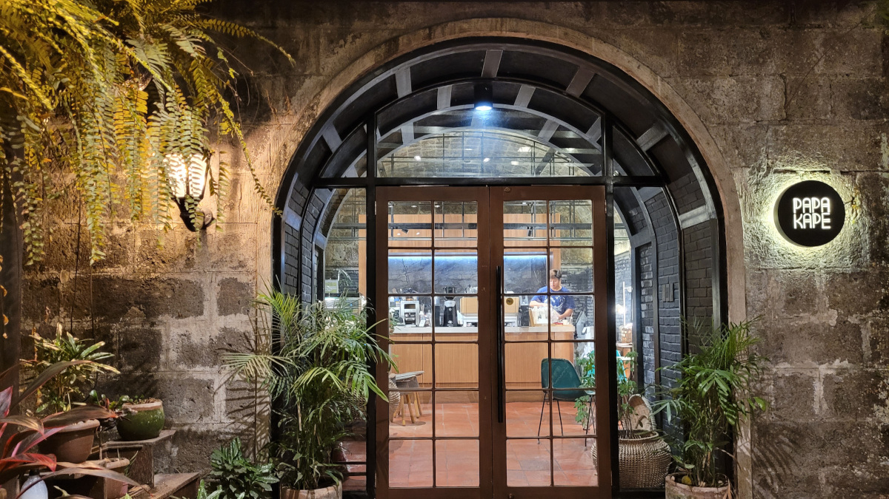
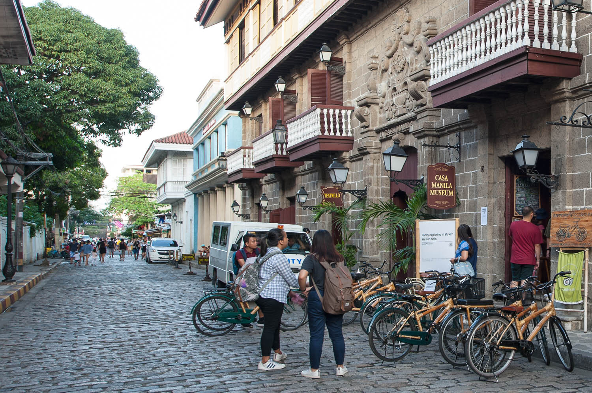

Featured Spots
Local Favorite

Papa Kape
Rustic café set inside a 400-year-old cistern, serving bold kapeng barako and Filipino merienda.
0
Hidden Gem

Destileria Limtuaco
Step into the Philippines’ oldest distillery museum—see vintage equipment and sample artisanal spirits.
0
Heritage

Casa Manila
Discover life in 19th-century Manila through exquisitely restored period rooms and decor.
0
Join the Community
Share your favorite Intramuros spot or leave a review to help fellow explorers.
Submit a ReviewLatest Updates
- May 20, 2025: Added star rating review feature.
- May 15, 2025: Interactive map feature launched.
- May 10, 2025: Added user photo gallery for top spots.